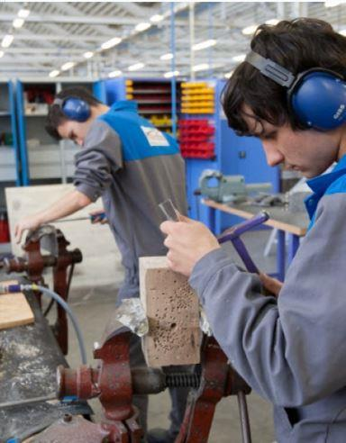

Il y a une grande faute à traiter, ou à tenter de traiter, de manière isolée, les problèmes liés à l’éducation et au niveau d’instruction, des élèves de la nation. L’enseignement est intimement corrélé à la vie économique, au progrès scientifique et technique et à l’aménagement du territoire.
Édouard Philippe, a rappelé à la nation, devant les braises encore fumantes de la cathédrale Notre-Dame, que la France avait besoin d’artisans et d’hommes de métier, pour la rénovation de l’édifice, mais pas seulement. Constat de circonstance. Il y a bien longtemps qu’il était alerté sur la perte de compétences et la désindustrialisation massive de la France, qui voit partir, à flux importants, ses savoir-faire et sa capacité d’innovation. Ce n’est pas un problème d’entrepreneurs. C’est un problème global, comprenant éducation, instruction et fiscalité. Je laisserais dans cet article, la fiscalité de côté, tout le monde sait que dans notre pays, le travail est hors de prix, la fiscalité assommante et les aides financières à l’emploi, de la part l’État, très injustement réparties.
Si on examine le couplage entre instruction, enseignement et industrie, on s’aperçoit que les deux milieux n’ont désormais que trop peu de lien et même s’ignorent souvent superbement, quand ils ne se méprisent pas. N’y a-t-il plus de bons ouvriers parce qu’il n’y a plus d’entreprises pour les accueillir, ou le contraire ? Les deux vont de mèche, principalement idéologique. Des professeurs enfermés dans leur bulle, n’ayant quasiment jamais de rapport avec le milieu entrepreneurial et idéologiquement, situés à gauche et très majoritairement féminins, principalement dans le primaire, là où se créées, ou pas, les capacités du futur élève. On ne devient pas bon élève au lycée, comme ça, de manière magique, à quelques exceptions près. On le devient avant huit ans. A cet âge, on attrape aussi, quand les choses se font bien, le courage, la curiosité, l’envie d’apprendre. On peut aussi terminer blasé, apathique et fainéant. L’école, autant que le milieu familial, ou l’ambiance médiatique, peuvent faire basculer, d’un côté ou de l’autre.
Et ce système scolaire, que certains trouvent élitiste, se cale en fait sur le rythme de ses pires élèves, si bien que les bons, ou les potentiellement bons, s’y ennuient à mourir. Les formateurs ont une marotte : la « pédagogie différenciée ». Elle indique qu’on doit être moins exigeant avec les élèves en difficulté et les faire travailler à un niveau en-dessous des autres, afin de les placer, en « situation de réussite ». Plus certainement, « en situation d’illusion ». Cette considération s’entendrait aussi, normalement, vers le haut, c’est à dire, un travail plus abouti avec les meilleurs élèves, mais dans les faits, ça n’existe pas. Et en pratique, dans les quartiers très difficiles, quand les conditions d’apprentissage sont délétères et le public pas forcément adhérent, la pédagogie différenciée, vers le bas, devient la pédagogie tout court et l’on travaille très en dessous de ce que le voudraient les exigences des statistiques européennes de type PISA, qui placent la France dans la seconde moitié du ventre mou du classement. Et l’on se retrouve avec un taux de réussite au bac identique en tous points du territoire et des élèves de BTS, tout juste francophones. En réalité, l’école fait beaucoup de politique et d’idéologie. Elle a réduit drastiquement les temps d’enseignement fondamentaux, les a remplacés par la sensibilisation à l’écologie, à la nutrition, à la cause humanitaire. Elle pratique également, sans aucune retenue, le matraquage du « vivre ensemble », de la « diversité », adulée, du multiculturalisme, du genre, la lutte contre l’homophobie, dès le CP... on cauchemarde. Elle se soucie, médiatiquement, de l’apprentissage de l’arabe dès la primaire, pour « faire avancer l’intégration ». Comme si elle avait promotionné l’apprentissage du Portugais ou de l’Espagnol, pour faire avancer l’intégration des immigrés de ces origines. En résumé, elle fait du bourrage de crânes idéologique.
Filières inutiles et illusion de compétences
Et on y vante les filières générales, les sciences sociales, dont les diplômes débouchent sur pas grand-chose. On maintient le plus longtemps possible, dans des enseignements abstraits, des enfants qui ne sont pas faits pour et finalement, se retrouvent, à la sortie, avec des qualifications inutiles, ou même rien, avec des savoir-être et des codes de comportement et de communication, incompatibles avec la vie et le travail en entreprise. Lors de l’écriture de mon dernier livre, une DRH de vingt ans d’expérience, dans une grande banque, m’expliquait : « Il y a vingt ans, on virait une recrue par an et ça faisait tout un pataquès. Aujourd’hui, on en vire une par semaine, sans que personne ne dise rien. Il faut se battre pour tout : les faire arriver à l’heure, les obliger à porter une tenue décente, leur faire adopter un langage d’entreprise avec les clients »… le tout avec des Bac+2 à +5. Les mêmes problèmes pointent déjà au lycée, mais ils sont tolérés : il ne faut pas brimer les jeunes dans leur expression, ou leur développement psycho-affectif. Comme si la moindre règle devait être considérée comme un carcan ? Et de toute façon, nombre de professeurs arrivent au travail en jean-pull, comme leurs élèves et usent, comme eux, de leurs téléphones pendant leurs propres cours. Ceci alors que des écoles d’excellence imposent discipline, travail et assiduité, sans que personne ne trouve rien à redire, comme quoi, c’est possible. Tout cela au nom d’une égalité qui n’existe pas. Celui qui naît, grand, beau, fort et intelligent, dans une famille aisée, sera toujours en avance sur le gamin malnutri, issu du quart monde, avec des parents chômeurs. Et entre ces deux extrêmes, tous les cas de figures sont bien là, mais en aucun cas l’égalité. Il faut se faire une raison, l’école, si elle peut réduire quelques écarts, ne fabriquera pas que des cracks, même au prix de tolérances inadmissibles avec les exigences et les comportements.
Une égalité pas de ce monde
Côté entreprises, on aimerait des gens productifs immédiatement et même si pas mal de boîtes s’attachent à bien former leurs salariés, il faut encore savoir les garder. Salaires peu attractifs, conditions de travail pas toujours idéales, perspectives de carrière réduites, milieu plus droitier que celui que fréquentent les jeunes dans le secondaire. Le passage du monde de l’enseignement, au monde de l’entreprise, est un changement complet d’univers totalement opposés. Et seuls les mieux préparés y survivent.
Il faut se faire une raison : l’égalité n’est pas de ce monde. L’objectif du système éducatif ne doit pas être de donner le bac à tout le monde, mais d’amener chacun au plus haut niveau qu’il est capable d’atteindre, ce n’est pas pareil. L’égalité réside dans le fait qu’on doit déployer, pour chacun, la même énergie, afin de l’amener à son meilleur niveau.
Il va falloir, pour cela, remettre du lien entre entreprises et système éducatif. Remettre au goût du jour les orientations, à tous les niveaux, à partir de 14 ans, redorer, en termes d’image, les métiers manuels et ouvrir grand au public, très tôt, dès la primaire, le monde du travail, afin que chaque enfant, dès le plus jeune âge, choisisse, non pas un métier, mais puisse se projeter dans ce qu’il a envie de devenir, dans la place qu’il souhaite prendre au sein d’un système, certes imparfait, mais le seul dont nous disposons et qui peut marcher pas trop mal, quand on s’en donne la peine. De toute manière, les évolutions positives des sociétés ne sont jamais produites par des ignares et des fainéants.
Cela se fait déjà un peu, mais trop peu. On doit exploiter des pistes qui existent déjà. Comme ces partenariats, dans le Sud-Ouest, entre établissements scolaires et entreprises de l’aviation. Comme cette école de mécaniciens de l’armée, à Bourges, où l’internat couple enseignements généraux, mécanique et discipline sportive. Comme ces autres partenariats, qui peuvent exister entre constructeurs automobiles et filières d’ingénieurs, ou cursus professionnels d’apprentissage. Il faut appuyer sur ce type de partenariats et l’ouvrir à des entreprises plus petites. Ceci en veillant à la probité des formateurs. Mettre en place des aides d’État à la transmission des savoir-faire spécialisés, en promotionnant, par exemple, des mi-temps dédiés aux tutorats, pour les salariés très qualifiés, en fin de carrière, plutôt que de les jeter dehors, pour cause d’âge limite atteint, ou salaires trop élevés. Ils partent ainsi, souvent, en emmenant avec eux des compétences que l’on regrette rapidement et dont on doit apprendre à se passer, faute de pouvoir les reconstruire.
Il serait bon d’utiliser, dans cet objectif, les spécialités régionales, les thématiques industrielles existantes, liés à l’histoire des lieux. Cela sera l’occasion d’améliorer, voire de créer des voies de communication entre régions à thèmes, pour le déplacement des futurs professionnels et des marchandises. Voies de communications physiques et informatiques. L’enseignement est partie intégrante du projet gaulliste, lié à la réindustrialisation du pays et à une homogénéisation de son tissu économique. Et dans cette optique, c’est à l’État de montrer l’exemple, par la dissolution de l’ENA qui n’est qu’une vaste entreprise de cooptation, qui se passe du travail et du mérite. Pour promotionner les qualités dépistées dans les grandes écoles présentes sur le territoire national. Egalement, il doit décentraliser ses ministères. Avec les communications électroniques à haut débit, il n’y a plus de raisons valables pour que les fonctionnaires soient à une portée de flèche de l’Elysée. Ce faisant, l’État dynamiserait des villes moyennes, des centres villes désertifiés, rééquilibrerait les secteurs géographiques entre eux. Et désengorgerait Paris, alors même que de nombreux parisiens, effarés par l’agitation, la pollution et les questions de sécurité, rêvent de fuir Paris et la petite couronne. Un moyen bien plus radical que la taxation imbécile des voitures, au poids, pour limiter la pollution.
L’État doit montrer l’exemple
A la suite de l’État, les entreprises décentraliseraient elles-aussi, se regroupant par régions à thème, un peu comme dans chaque ville moyenne, il existe un quartier des concessionnaires automobiles, ou des grandes enseignes d’ameublement, qui gagnent tous à ce que le client fasse la tournée comparative dans un périmètre restreint. Comme il existait déjà, au Moyen-Age, des rues des bouchers ou des tanneurs. Et les écoles professionnelles suivraient, attenantes à leurs secteurs d’activités respectifs, avec comme limite, évidemment de ne pas verser dans des régions au caractère exclusif, mais à des « dominantes » régionales. Latéralement, c’est encore à l’État, non pas d’aider directement, financièrement, des entreprises dont bon nombre profitent des subsides publics pour améliorer leur rentabilité et licencier, ou tout simplement survivre alors qu’elles ne sont pas viables. Mais la force publique doit passer des partenariats pour favoriser la recherche et l’innovation, se doter à nouveau d’une recherche fondamentale digne de ce nom. Il faut se souvenir que l’innovation ne peut pas passer par un choix politique que l’on promotionne, comme par exemple celui de la voiture électrique, qui deviendra à terme, un gigantesque fiasco, comme commencent à l’expliquer quelques spécialistes. Non, le vrai progrès commence par la genèse de plusieurs projets concurrents, dont l’un, ou l’autre, parce qu’il est le plus abouti, va naturellement se détacher du lot. Il faut accepter de financer dix projets, pour n’en voir qu’un ou deux émerger. Se souvenir de toutes les formules aériennes loufoques qui sont nées au début du XXème siècle, avant que ne s’impose l’avion tel qu’on le connaît.
A terme, possibilité pour l’État de recruter ses meilleurs éléments, non pas dans des milieux sanctuarisés, monopolisés par une caste, mais de s’ouvrir à la société civile méritante, qui accéderait aux postes régaliens, ou aux mandats d’élus, de manière limitée dans le temps, en étant issus des tissus économiques de leurs régions et en ayant connu « la vraie vie ». Ceci en lieu et place de politiciens professionnels, dont un grand nombre n’a jamais travaillé en entreprise, voire jamais travaillé tout court, depuis fort longtemps.
Nous proposons ainsi de lier l’ensemble des leviers de l’État entre eux et d’établir des synergies de développement, entre la question centrale de l’enseignement, en élevant le niveau moyen des diplômes et des qualifications dans le pays, de diplômes négociables sur le marché du travail, bien sûr. Le tout servant de base pour revoir l’aménagement du territoire, rééquilibrer les régions et les villes entre elles, mieux répartir les activités économiques et industrielles, afin que la prospérité, comme le système éducatif, n’oublie personne.
P.D.
« MÉTHODE » RECOMMANDE L’OUVRAGE DE PIERRE DURIOT
« COMMENT L’ÉDUCATION CHANGE LA SOCIÉTÉ »
Le comportement des jeunes d'aujourd'hui est souvent sujet d'effarement pour les adultes des générations passées, dans la vie sociale, scolaire ou au travail. En fait le sujet est tabou, il ne faut pas stigmatiser. Les jeunes d'aujourd'hui ne sont plus les mêmes que les jeunes d'antan, tout simplement parce qu'ils n'ont pas été éduqués de la même manière. Issu du terrain, sans concession mais sans procès non plus, cet ouvrage fait l'état des lieux sur ce qui a changé et comment la roue a tourné.
Partager cette page